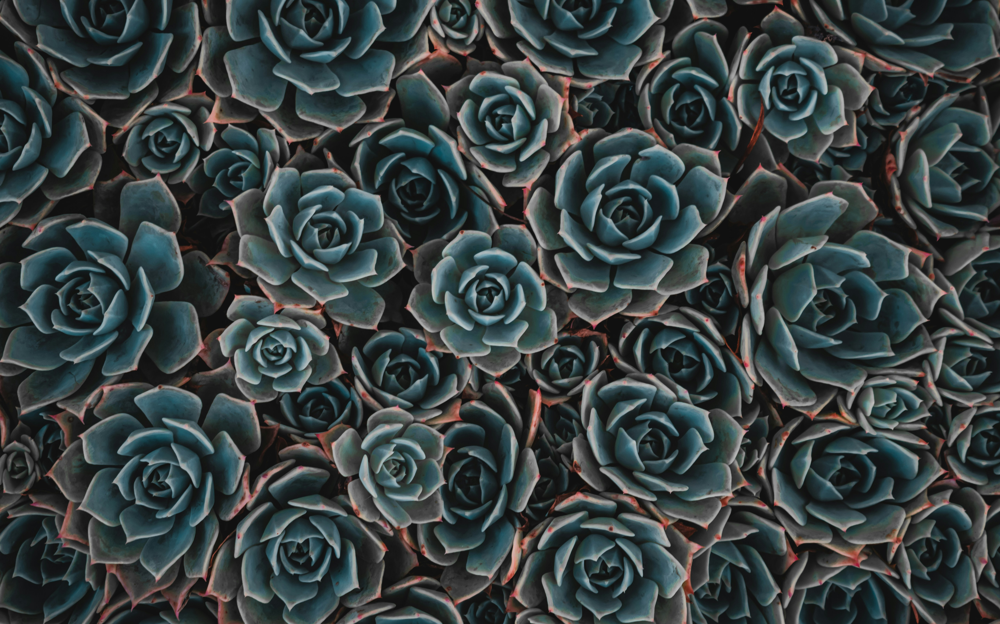
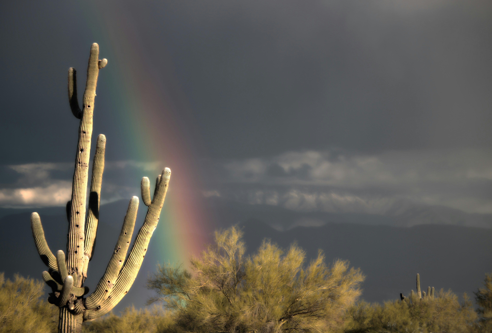
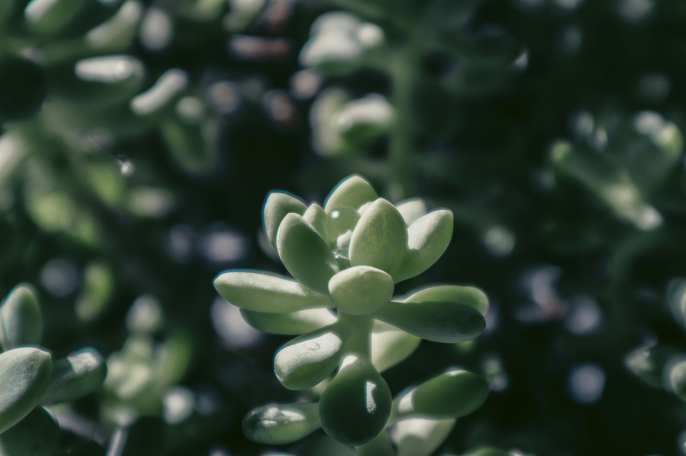

Las cactáceas son una familia de plantas verdaderamente fascinantes, adaptadas a los entornos más áridos y desafiantes del planeta. Estas plantas suculentas, originarias de las regiones desérticas de América, han desarrollado una increíble variedad de formas, tamaños y estrategias de supervivencia para prosperar en condiciones extremas.
La rosa albastro, conocida científicamente como Pelecyphora aselliformis, es una pequeña pero impresionante cactácea originaria de los desiertos del noreste de México. Esta planta pertenece a la familia de las cactáceas y es altamente apreciada por los coleccionistas debido a su forma y colores únicos.Una de las características más notables de la rosa albastro es su capacidad para enterrarse casi por completo en el suelo, dejando solo la parte superior expuesta. Esta estrategia le permite sobrevivir en los entornos áridos y desérticos, minimizando la pérdida de agua y protegiéndose del intenso calor.
El saguaro (Carnegiea gigantea) es un verdadero gigante entre los cactus, siendo la especie de cactus más grande del mundo. Originario de los desiertos cálidos del suroeste de Estados Unidos y noroeste de México, este imponente cactus columnar ha sido durante mucho tiempo un símbolo icónico del paisaje desértico.A pesar de su apariencia áspera y espinosa, el saguaro produce unas hermosas flores blancas con forma de campana que brotan de los extremos de sus ramas. Estas flores se abren por la noche y atraen a diversos polinizadores nocturnos, como los murciélagos y las polillas.
La planta jade (Crassula ovata) es una suculenta cactacea nativa de Sudáfrica y uno de los ejemplares más populares para cultivar en interiores. A pesar de su nombre, no está relacionada con la preciada gema, sino que recibe su apelativo por el intenso color verde jade de sus hojas carnosas y ovaladas.La planta jade es sumamente fácil de cultivar y requiere poco mantenimiento, lo que la convierte en una excelente opción para principiantes en el mundo de las cactaceas. Tolera bien la sequía y prospera con riego moderado y exposición a la luz solar directa.